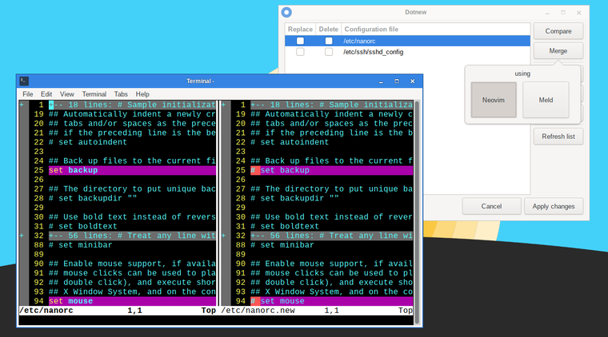

Dotnew manages the system configuration upgrades used by Slackware. It will display a possible course of action for each new configuration file found in the system.

To execute this utility in a terminal, simply type
sudo dotnew